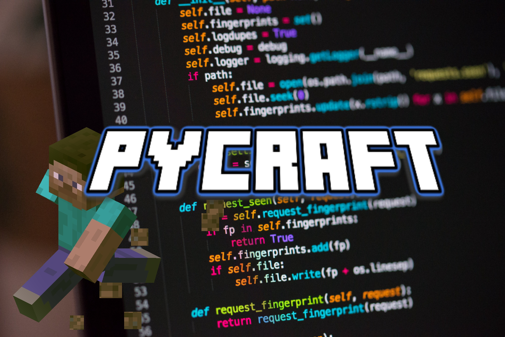

PyCraft

What is PyCraft?
PyCraft is an attempt to design a game similar to Minecraft. The latest version is PyCraft ALPHA 1.0.0 and it will be released as soon as we get the PyCraft Launcher to work. Updates will be posted on the ZachTheCoder YouTube page.
What is the PyCraft Launcher?
The PyCraft Launcher is the main file you run to play PyCraft. It's connected to every single version of PyCraft (ALPHA, BETA and official versions). You may select any version and click PLAY. It will then run the selected version.
What is PyCraft made with?
As the name suggests, PyCraft is made with the Python programming language. The launcher uses the Tkinter library, but the actual game itself uses Ursina Engine for the 3D look.